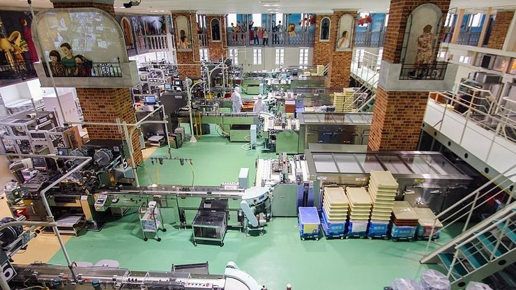

Shiroi Koibito Park
白い恋人パーク
Shiroi Koibito Park (白い恋人パーク) is a theme park by Ishiya, a local chocolate company. The company's flagship product is the Shiroi Koibito cookie, which consists of two thin butter cookies and a layer of white chocolate in between. It is one of the most famous souvenirs from Hokkaido.
The park consists of a free area with a shop, cafe and restaurant and a paid area with various chocolate-related exhibits and, most interestingly, a few large windows through which visitors can observe the cookie production process in the factory. It is also possible to create your own cookies in hands-on workshops. Another part of the Shiroi Koibito Park is a soccer field that serves as the practice ground for Consadole Sapporo, the local professional soccer team.
